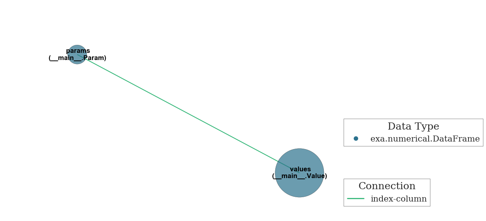

Welcome to exa! Let’s get started¶
[1]:
import pandas as pd
import numpy as np
import exa
You might be familiar with pandas¶
[2]:
x = np.linspace(0, 10, 11)
y = np.random.rand(11)
df1 = pd.DataFrame.from_dict({'x': x, 'y': y})
df1.head()
[2]:
| x | y | |
|---|---|---|
| 0 | 0.0 | 0.906796 |
| 1 | 1.0 | 0.448143 |
| 2 | 2.0 | 0.105326 |
| 3 | 3.0 | 0.010824 |
| 4 | 4.0 | 0.244684 |
DataFrames are great! Usually you can find a way to represent your data in a single dataframe¶
[3]:
df1 = pd.DataFrame.from_dict({'x': x, 'y': y})
b = pd.DataFrame(np.random.rand(11, 3))
b.columns = ['zi', 'zj', 'zk']
pd.concat([df1, b], axis=1).head()
[3]:
| x | y | zi | zj | zk | |
|---|---|---|---|---|---|
| 0 | 0.0 | 0.906796 | 0.733138 | 0.396978 | 0.448463 |
| 1 | 1.0 | 0.448143 | 0.413719 | 0.755660 | 0.719040 |
| 2 | 2.0 | 0.105326 | 0.173512 | 0.154888 | 0.757688 |
| 3 | 3.0 | 0.010824 | 0.730557 | 0.718124 | 0.229439 |
| 4 | 4.0 | 0.244684 | 0.055820 | 0.428332 | 0.083746 |
Sometimes data doesn’t fit nicely into a single dataframe¶
[4]:
array_params = pd.DataFrame.from_dict({'ox': [-3.0], 'oy': [-3.0],
'nx': [15], 'ny': [15],
'dxi': [0.4], 'dyj': [0.4]})
array_values = pd.DataFrame.from_dict({'f1': (np.random.rand(15 * 15)),
'f2': (np.random.rand(15 * 15))})
print(array_params)
array_values.head()
dxi dyj nx ny ox oy
0 0.4 0.4 15 15 -3.0 -3.0
[4]:
| f1 | f2 | |
|---|---|---|
| 0 | 0.126503 | 0.827317 |
| 1 | 0.389927 | 0.768678 |
| 2 | 0.388104 | 0.187729 |
| 3 | 0.408751 | 0.614016 |
| 4 | 0.011289 | 0.499478 |
The exa Container links dataframes together with minimal effort¶
[5]:
class Param(exa.DataFrame):
_indices = ['param_index'] # Set as the dataframe's index
class Value(exa.DataFrame):
_columns = ['param_index'] # Set as a REQUIRED column in the dataframe's construction
[6]:
array_params.index.name = 'param_index'
array_values['param_index'] = 0
t = exa.Container(params=Param(array_params), values=Value(array_values))
The network() method shows you a network graph of the relationships in your data¶
[7]:
t.network()

There are idx-col and col-col relationships, as well as other class attributes¶
Categories are efficient if your data has a small number of possible values but normally require special attention¶
with the _categories attribute, they require no special attention¶
[8]:
class CatDF(exa.DataFrame):
_categories = {'cat1': str, 'cat2': np.int64}
[9]:
# Note that the pandas API remains intact
c = CatDF.from_dict({'cat1': ['foo'] * 30 + ['bar'] * 40, 'cat2': [0] * 18 + [1] * 13 + [2] * 39})
print(c.dtypes)
c.head()
cat1 category
cat2 category
dtype: object
[9]:
| cat1 | cat2 | |
|---|---|---|
| 0 | foo | 0 |
| 1 | foo | 0 |
| 2 | foo | 0 |
| 3 | foo | 0 |
| 4 | foo | 0 |
There are attributes for _groupbys, _traits, _precision allowing for automatic passing to JS widgets¶
[10]:
class TraitDF(exa.DataFrame):
_traits = ['f1', 'f2']
_precision = {'f1': 8, 'f2': 3}
[11]:
tr = exa.Container(values=TraitDF(array_values))
[12]:
tr
[12]:
<exa.container.Container at 0x19837cb9588>
[13]:
tr._traits_need_update
[13]:
False
[14]:
tr._widget.traitdf_f2
[14]:
'[0.827,0.769,0.188,0.614,0.499,0.942,0.252,0.173,0.374,0.207,0.317,0.549,0.169,0.607,0.351,0.854,0.048,0.446,0.617,0.891,0.029,0.556,0.621,0.812,0.36,0.154,0.902,0.821,0.876,0.497,0.479,0.839,0.643,0.222,0.472,0.586,0.115,0.821,0.232,0.959,0.237,0.722,0.679,0.496,0.865,0.893,0.529,0.856,0.272,0.66,0.935,0.275,0.604,0.399,0.334,0.656,0.771,0.044,0.758,0.725,0.508,0.408,0.129,0.102,0.687,0.735,0.221,0.119,0.19,0.049,0.2,0.217,0.716,0.297,0.085,0.025,0.163,0.537,0.628,0.815,0.58,0.154,0.24,0.93,0.275,0.935,0.669,0.125,0.925,0.357,0.314,0.449,0.556,0.062,0.37,0.472,0.969,0.867,0.291,0.233,0.09,0.826,0.157,0.411,0.228,0.758,0.235,0.419,0.033,0.019,0.605,0.358,0.58,0.255,0.066,0.719,0.425,0.406,0.796,0.304,0.858,0.972,0.817,0.063,0.789,0.635,0.369,0.192,0.464,0.002,0.088,0.804,0.427,0.882,0.933,0.942,0.628,0.326,0.488,0.523,0.335,0.852,0.222,0.38,0.233,0.457,0.866,0.409,0.03,0.342,0.558,0.991,0.148,0.987,0.646,0.544,0.553,0.827,0.467,0.654,0.477,0.101,0.35,0.364,0.193,0.265,0.875,0.925,0.219,0.936,0.098,0.771,0.797,0.994,0.919,0.9,0.518,0.167,0.937,0.186,0.019,0.273,0.239,0.893,0.283,0.343,0.806,0.207,0.514,0.027,0.818,0.51,0.911,0.406,0.973,0.679,0.289,0.622,0.782,0.699,0.258,0.329,0.733,0.409,0.751,0.258,0.651,0.398,0.941,0.255,0.396,0.054,0.936,0.782,0.041,0.394,0.566,0.529,0.784,0.854,0.561,0.583,0.379,0.344,0.308]'
[15]:
class GroupDF(exa.DataFrame):
_columns = ['f1', 'f2']
_traits = ['f1', 'f2']
_precision = {'f1': 2, 'f2': 2}
_groupbys = ['grp']
[16]:
array_values['grp'] = np.repeat(range(15), 15)
gr = exa.Container(values=GroupDF(array_values))
gr._update_traits()
[17]:
gr._widget.groupdf_f2
[17]:
'[[0.83,0.77,0.19,0.61,0.5,0.94,0.25,0.17,0.37,0.21,0.32,0.55,0.17,0.61,0.35],[0.85,0.05,0.45,0.62,0.89,0.03,0.56,0.62,0.81,0.36,0.15,0.9,0.82,0.88,0.5],[0.48,0.84,0.64,0.22,0.47,0.59,0.11,0.82,0.23,0.96,0.24,0.72,0.68,0.5,0.87],[0.89,0.53,0.86,0.27,0.66,0.93,0.28,0.6,0.4,0.33,0.66,0.77,0.04,0.76,0.72],[0.51,0.41,0.13,0.1,0.69,0.74,0.22,0.12,0.19,0.05,0.2,0.22,0.72,0.3,0.09],[0.03,0.16,0.54,0.63,0.82,0.58,0.15,0.24,0.93,0.28,0.93,0.67,0.13,0.92,0.36],[0.31,0.45,0.56,0.06,0.37,0.47,0.97,0.87,0.29,0.23,0.09,0.83,0.16,0.41,0.23],[0.76,0.23,0.42,0.03,0.02,0.6,0.36,0.58,0.26,0.07,0.72,0.43,0.41,0.8,0.3],[0.86,0.97,0.82,0.06,0.79,0.63,0.37,0.19,0.46,0.0,0.09,0.8,0.43,0.88,0.93],[0.94,0.63,0.33,0.49,0.52,0.33,0.85,0.22,0.38,0.23,0.46,0.87,0.41,0.03,0.34],[0.56,0.99,0.15,0.99,0.65,0.54,0.55,0.83,0.47,0.65,0.48,0.1,0.35,0.36,0.19],[0.27,0.88,0.93,0.22,0.94,0.1,0.77,0.8,0.99,0.92,0.9,0.52,0.17,0.94,0.19],[0.02,0.27,0.24,0.89,0.28,0.34,0.81,0.21,0.51,0.03,0.82,0.51,0.91,0.41,0.97],[0.68,0.29,0.62,0.78,0.7,0.26,0.33,0.73,0.41,0.75,0.26,0.65,0.4,0.94,0.25],[0.4,0.05,0.94,0.78,0.04,0.39,0.57,0.53,0.78,0.85,0.56,0.58,0.38,0.34,0.31]]'
Trait data is passed to JS for viewing in a widget with a rather capable app utilizing Three.JS and WebGL¶
[18]:
exa.Container()
[18]:
<exa.container.Container at 0x1983b0aa978>
dict_keys(['type', 'app', 'content', 'data'])
The real power is in crafting a container specific to the needs of a data set¶
There is also an Editor class that makes repetitive file I/O tasks simpler¶
[19]:
s = exa.Editor('exa_demo.ipynb') # Before you run this cell, save the notebook!
s
[19]:
0: {
1: "cells": [
2: {
3: "cell_type": "markdown",
4: "metadata": {},
5: "source": [
6: "### Welcome to exa! Let's get started"
7: ]
8: },
9: {
10: "cell_type": "code",
11: "execution_count": 1,
12: "metadata": {
13: "collapsed": false
14: },
15: "outputs": [],
16: "source": [
17: "import pandas as pd\n",
18: "import numpy as np\n",
19: "import exa"
20: ]
21: },
22: {
23: "cell_type": "markdown",
24: "metadata": {},
25: "source": [
26: "### You might be familiar with pandas"
27: ]
28: },
29: {
...
764: "execution_count": null,
765: "metadata": {
766: "collapsed": true
767: },
768: "outputs": [],
769: "source": []
770: }
771: ],
772: "metadata": {
773: "kernelspec": {
774: "display_name": "Python 3",
775: "language": "python",
776: "name": "python3"
777: },
778: "language_info": {
779: "codemirror_mode": {
780: "name": "ipython",
781: "version": 3
782: },
783: "file_extension": ".py",
784: "mimetype": "text/x-python",
785: "name": "python",
786: "nbconvert_exporter": "python",
787: "pygments_lexer": "ipython3",
788: "version": "3.5.1"
789: }
790: },
791: "nbformat": 4,
792: "nbformat_minor": 0
793: }
[20]:
s.find('exa_demo.ipynb')
[20]:
{'exa_demo.ipynb': OrderedDict([(733,
' "s = exa.Editor(\'exa_demo.ipynb\') # Before you run this cell, save the notebook!\\n",'),
(747, ' "{\'exa_demo.ipynb\': OrderedDict([(733,\\n",'),
(748,
' " \' \\"s = exa.Editor(\\\\\'exa_demo.ipynb\\\\\')\\\\\\\\n\\",\'),\\n",'),
(749,
' " (747, \' \\"{\\\\\'exa_demo.ipynb\\\\\': OrderedDict()}\\"\'),\\n",'),
(750,
' " (756, \' \\"s.find(\\\\\'exa_demo.ipynb\\\\\')\\"\')])}"'),
(759, ' "s.find(\'exa_demo.ipynb\')"')])}
[ ]:
[ ]: